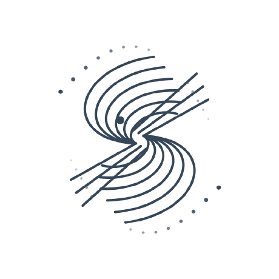

V1.0.0 STABLE · 2026-09-18 SNAPSHOT
Yofune Agent Security Checklist
A verifiable security baseline for AI agents: controls, tests, evidence, assurance, and revalidation.

YASCVerifiable Agent SecurityV1.0.0 STABLE · 2026-09-18 SNAPSHOT
A verifiable security baseline for AI agents: controls, tests, evidence, assurance, and revalidation.